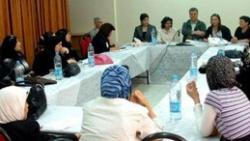

پذيرش > سایت نوشته ها > مشارکت سیاسی و حقوق زنان در فلسطین


 مشارکت سیاسی و حقوق زنان در فلسطین مشارکت سیاسی و حقوق زنان در فلسطین
20 تیر 1390 - سوده راد - نسخه قابل چاپ
درباره فلسطین وشرایط جنگی جاری بر زندگی روزمره در این کشوربسیار دیده و شنیدهایم. تصاویر جنگهای خیابانی، اخبار حملات انتحاری و هوایی را بسیار دیده و خواندهایم، ولی کمتر به زنان و حقوق زنان در این کشور پرداخته شده است. شاید یکی از دلایل این امر این باشد که با گذرنامههای کنونی امکان سفر ایرانیها به این کشور وجود ندارد.
آنچه در ادامه میآید حاصل گفتوگوی زمانه با ساندرین آمر، فعال فلسطینی درمرکز مطالعات و اسناد زنان فلسطین در رابطه با وضعیت حقوق زنان در فلسطین و دستاوردهای تلاش چندین ساله آنها است.
زنان فلسطینی و سیاست
زنان در صدسال اخیر نقشهای گوناگونی در سیستم سیاسی فلسطین ایفا کردهاند. آنان در تصمیمگیریها حضور داشتهاند. ولی مشارکت سیاسی زنان در مقایسه با مردان هنوز هم دچار محدودیتهایی است.
برای بررسی چند و چون این این مشارکت سیاسی، روند آن را میتوان به چهارمرحله تقسیم کرد:
مرحله اول: پیش از سال ۱۹۴۸ـ زنان فلسطینی از سال ۱۹۱۷ در اعتراضات به اعلامیه بالفور شرکت میکردند و در سال ۱۹۲۰ در کمیتهای که به مذاکره با مقامات عالی بریتانیا فرستاده شد، چندین عضو زن هم داشت. یک سال بعد، گروهی از زنان تحصیلکرده فلسطینی «اتحادیه زنان فلسطینی» را بنیان نهادند که هدفش سازماندهی زنان برای شرکت در مبارزات ملیگرایانه بود و برای این کار به روستاها هم سفر میکردند. با این شروع بسیار خوب، پس از مهاجرت اجباری فلسطینیها از سرزمینهاشان فعالیتهای این گروه به امور خیریه کاهش یافت، چرا که مشکلات روزمره زنان برای ادامه زندگی در پناهندگی و بیخانمانی مسئله اصلی آنها بود.
مرحله دوم: بین سالهای ۱۹۴۸ تا ۱۹۷۶ـ پس از تأسیس سازمان آزادیبخش فلسطین در سال ۱۹۶۴، چشمانداز جدیدی برای کنشگری زنان نمایان شد. اتحادیه زنان فلسطینی از اولین مراحل تأسیس شورای ملی فلسطین در غرب بیتالمقدس شرکت داشت. «اتحادیه عمومی زنان فلسطینی» که در سال ۱۹۶۵ بنیانگذاری شد، درنظر داشت ایدئولوژی جنسیتی اتحادیه زنان در مبارزات جنبش ملیگرایانه را به چالش بکشد و در این راه موفقیتهایی هم بهدست آورد و توانست اتحادی نسبی میان سازمانهای کوچک و بزرگ زنان در جهان عرب بوجود آورد. با این حال تلاش این گروه برای نمایندگی رسمی و قانونی زنان فلسطینی قدرت بالقوه آنها را به عنوان کنشگران برابری جنسیتی در تأثیر بر افکار عمومی کاهش داد. تا سالهای ۱۹۷۰، با اینکه زنان پناهنده در اردن به ارتش و در لبنان به اعضا یا کارکنان سازمانهایی چون سازمان آزادیبخش فلسطین میپیوستند، توجه ویژهای به وضعیت و مسائل ویژه زنان نمیشد.
مرحله سوم: بین سالهای ۱۹۶۷ تا ۱۹۸۷- در این دوره زنان به یکباره آنچنان به فعالیتهای سیاسی روی آوردند که بسیاری از آنها دستگیر و زندانی شدند و بهرهگیری از روشهای سازماندهی شده به مشارکت و ایفای نقش برتر در بازسازی کشور کمک کرد.
مرحله چهارم: بین سالهای ۱۹۸۷ تا امروز- خیزش مردمی و انتفاضه اول، زمینه را برای یک تغییر واقعی آماده کرد. جوانان، زن و مرد، در فعالیتهای سیاسی شرکت کردند و جنس روابط اجتماعی دستخوش تغییرات شد. زنان اینبار به اهمیت حضور و تلاش خود پی برده و خواهان حضور در دولت و ساختار حکومت شدند. تلاش آنها برای بهبود وضعیت زنان موجب شد در سالهای ۱۹۹۰ سازمانهایی غیردولتی و مراکز مستقل زنان تأسیس کنند و به موضوعاتی چون خشونتهای خانگی، بررسی قوانین احوالیه شخصی، قتلهای ناموسی و ازدواجهای اجباری و ناخواسته بپردازند.
در طول انتفاضه دوم، مشارکت سیاسی زنان به کمترین حد خود رسید. بدون شک امضا توافقنامه اسلو در این کاهش مشارکت سیاسی زنان در مبارزات سیاسی آزادیخواهانهشان بیتأثیر نبود. در همین زمان، سازمانهای غیردولتی فعالیتهای اجتماعی خود را در سرزمینهای اشغالی افرایش دادند، چرا که پیمان اسلو، که هنوز اجرا نشده است، امیدها را برای بازسازی سیاسی، اقتصادی و اجتماعی کشور فلسطین افزایش داد.
در سال ۱۹۹۴، زمانی که حکومت خودگردان فلسطین به رسمیت میرسید، پیشنویس قانون اساسی فلسطین با در نظرداشتن اصل برابری زن و مرد نوشته میشد. اتحادیه عمومی زنان فلسطینی، از رییس دولت خودگردان وقت، یاسر عرفات خواست برابری جنسیتی را یکی از اصول اولیه قانون قراردهد. گروههای فعال زنان درسطح ملی و کشوری، علاوه بر آگاهسازی زنان بر حقوق خود، استراتژیهایی را برای بهبود وضعیت در حوزههای آموزش، سلامت، کار و اقتصاد اجرا کردند که نتایج آن نیز در انتخابات ۱۹۹۶ آشکار شد.
سهمیهبندی جنسیتی مشارکت سیاسی زنان
در حال حاضر طبق قانونی که پس از سه بار رد شدن نهایتاً در شورای قانونگذاری تصویب شد، باید حداقل ۲۰درصد از اعضای شوراهای شهر را زنان تشکیل دهند. برای انتخابات این شورا، فهرستهای انتخاباتی باید یک زن در سه جایگاه اول، یک زن در چهار جایگاه بعدی و یک زن در بین پنج جایگاه بعدی و الی آخر حضور میداشت. البته این نوع سهمیهبندی که حضور زنان را تضمین میکند مورد اعتراض برخی از گروهها قرارگرفت و در انتخابات ۲۰۰۶ احزاب توانستند سهمیهبندی در فهرست شورای قانونگذاری را رعایت کنند ولی در شوراهای محلی و شهری نتوانستند به تعهد خود عمل کنند. با این حال حضور زنان در انتخابات دور اول و دوم شورای قانونگذاری ۱۹۹۶ و ۲۰۰۶ چشمگیربوده است و ۴۷درصد کل رأیدهندگان را تشکیل دادهاند. آمارها نشان میدهند که ۵. ۸۸ درصد مردان و ۲. ۹۳ درصد زنان از برابری حقوق زنان در مشارکت سیاسی دفاع میکنند. این اعتقاد به برابری حقوقی یکی از عواملی است که حضور زنان در شورای قانون گذاری از ۶. ۵ درصد در سال ۱۹۹۶ به ۳. ۱۲درصد در سال ۲۰۰۶ و در شوراهای محلی در همین سالها از ۶. ۰درصد به ۱۹درصد رسیده است.
در حال حاضر از ۲۲ وزارتخانه، ریاست پنج وزارتخانه بر عهده زنان است و در سال ۲۰۰۹ یکی از اعضای کمیته اجرایی سازمان آزادیبخش زن بود. اولین زن رییس سازمان بورس اوراق بهادار، اولین زن فرماندار رامالله و البیره، اولین رییس زن مرکز آمار فلسطین که نهادی غیردولتی است، همه نشانههایی از پیشرفت سریع زنان در مشارکت سیاسی و اجتماعی برای ساختن آینده فلسطین است. در نوارباختری، در سال ۲۰۰۸ از ۱۲۰ قاضی تنها ۱۸ نفر زن بودند که این نرخ از ۱۵درصد به ۶. ۱۶، در سال ۲۰۰۹ رسید. این آمار افزاینده در مورد وکلا و پزشکان نیز صدق میکند.
وزارت امور زنان
وزارت امور زنان فلسطین در نوامبر۲۰۰۴ آغازبه کار کرد. بر اساس برنامه عملی سه ساله که این وزارتخانه برای انجام در ۲۰۰۸ تا ۲۰۱۰ برنامهریزی شدهاست، مهمترین و مبرمترین مشکلات زنان فلسطینی در رأس امور قرارگرفته است. هدف کلی این برنامهعملی تضمین شرایط مناسب قانونی، سیاسی و اجتماعی برای رشد زنان است و بطور خاص برنامههایی برای تشویق زنان برای مشارکت در رویههای تصمیمگیری و سیاستگذاری کشور، کاهش و مبارزه با فقر زنان جوان، بویژه زنان سرپرست خانوار، آموزشهای حرفهای زنان جوان در حال اجرا است.
این تلاشها موجب شد که در وزارتخانهها و سازمانها، نام مراکزی که مربوط به زنان بودند به مرکز جنسیت تغییر یافته و درنتیجه حوزه فعالیتهای این واحدها و مراکزها هم گسترش یابد و اجرای استراتژیهای وزارت امور زنان را آسانتر کند.
خشونتهای جنسیتی بر زنان، خشونت خانگی
بر اساس آمارهای مرکزآمارفلسطین، در دسامبر۲۰۰۵ و ژانویه ۲۰۰۶، در میان بیش از ۴۰۰۰ خانوار، ۲۳درصد زنان دچار خشونت خانگی بودهاند ولی تنها کمی بیشتر از یک درصد زنان شکایت کردهاند. دوسوم آنها گفتهاند که مورد خشونتهای روانی و سواستفاده قراردارند. خشونت بر علیه زنان در سرزمینهای اشغالی همچنان در خانهها مسکوت میمانند چرا که مرکز، سازمان یا حتی مکانی برای حمایت از آنها وجود ندارد. در فلسطین هم مانند بسیاری از کشورها، باز هم ناموس خانواده و آبروی خانوادگی به زنان اجازه نمیدهد راز خشونت علیه خود را افشا کنند. شرایط ویژه جنگی این کشور نشان میدهد که افزایش خشونتهای خانگی با افزایش اغتشاشات رابطه مستقیم دارد.
معمولاً زنان و دختران فلسطینی که در مورد خشونتهای خانگی سخن میگویند نه تنها از سوی خانوادههای خود، بلکه از سوی افراد محله و جامعه هم تحت فشار قرار میگیرند و متهم به آبروریزی میشوند. همچنین دستگاه قضایی فلسطین قتلها و جرمهای ناموسی را جدی نمیگیرند و محکومیتها تنها محدود به چند سال زندان میشوند.
دستاوردهای زنان فلسطینی
بر اساس سومین پیشنویس قانون اساسی فلسطین زنان میتوانند بدون نیاز به اجازه پدر یا همسرانشان و بطور کلی «ولی» گذرنامه دریافت کنند و ملیت خود را به فرزندان و همسران خود انتقال دهند. همسران مدیران کل وزارتخانهها گذرنامه سیاسی دریافت میکنند. بیوهها میتوانند برای فرزندانشان بدون اجازه عمو، دایی یا پدربزرگ آنها گذرنامه دریافت کنند. در سال ۲۰۰۹ کمیته مبارزه با خشونتهای جنسیتی تأسیس شد و در سال ۲۰۱۰ وارد فاز اجرایی در سطح ملی گردید.
مرخصی پس از زایمان از چهار به ۱۰ هفته افزایش یافت و مادران در سال اول پس از زایمان به ازای هر روز یک ساعت کاری دستمزد دریافت میکنند. حق حضانت و حقوق والدین بر فرزندان بین زن و مرد برابر است و برای تصمیمگیری آرامش و سلامتی کودک بر جنسیت والدین ارجح است. روز ۱۵ ماه می۲۰۱۱، رئیس جمهور محمود عباس از قضات خواست برای کسانی که قتلهای ناموسی را برنامهریزی یا اجرا میکنند حداکثر مجازات را درنظر بگیرد.
آنچه بر فلسطین گذشته است
پیش از سال ۱۹۲۰ فلسطین تنها فلسطین بوده است. در سال ۱۹۴۷ سازمان ملل متحد پذیرفت که ۴۸ درصد از فلسطین، متعلق به فلسطین باشد. در سال ۱۹۴۹، اسرائیل ۷۷. ۹۴ درصد اراضی فلسطین را تحت اشغال و کنترل خود در آورد. کرانه باختری که ۷۴. ۲۰ درصد سرزمین فلسطین را تشکیل میدهد، تحت کنترل اردن درآمد و مصر کنترل نوار غزه را، که ۳۲. ۱ درصد فلسطین است در دست گرفت. در سال ۱۹۷۶، اسرائیل باقی اراضی فلسطین، قسمتی از مصر و سوریه را اشغال کرد.
در نوار غزه بیش از ۷۰ درصد زندگی مردم به کمکهای بینالمللی وابسته است. نرخ بیکاری به ۴۰ درصد میرسد و ۷۰ درصد زیر خط فقر زندگی میکنند. ۹۰ درصد آب آشامیدنی در نوارغزه آلوده است و برای استفاده انسان مناسب نیست.
۲. ۱۰درصد جمعیت دچار سوءتغذیه مزمن هستند. عدم توانایی نیروگاه برق غزه در تأمین نیازهای منطقه، روزانه بین ۸ تا ۱۲ ساعت خاموشی بر غزه حاکم است. نه تنها ۹۰ درصد کارخانههای مستقر در این منطقه یا بطور کلی بسته هستند یا با کمترین ظرفیت خود کار میکنند، بلکه ماهیگیری هم تا فاصله سه مایل دریایی از ساحل ممنوع است.
در سال ۲۰۱۰، جمعیت فلسطینیها در تمام دنیا به ۱۰. ۹ میلیون نفر تخمین زده شده است که از این تعداد ۴. ۱ ملیون نفر در خاک فلسطین زندگی میکنند. حدود نیمی از این افراد را زنان و دختران تشکیل میدهند و رشد سالانه جمعیت ۶. ۲ درصد است. ۳۷. ۱ درصد مسیحی هستند. تراکم جمعیت درغزه، ۴۲۰۶ نفر در هر کیلومتر مربع است که بالاترین تراکم در دنیا محسوب میشود.
رادیو زمانه
ارسال به
بالاترین
،
توییتر
،
فریندفید
،
فیسبوک
در همين بخش :
 یک خبر تلخ؟ یک قانونشکنی؟ یک تصمیم بخشنامهای جدید؟ یک خبر تلخ؟ یک قانونشکنی؟ یک تصمیم بخشنامهای جدید؟
چرا بایست به سکسوالیته پرداخت؟ / نفیسه آزاد
آزارجنسی خانگی؛ «قربانی» نه، «نجات یافته»
زنان، بزرگترین بازندگان بهار عرب
سانسور از دیدگاه جنسیتی/الهه امانی
ديگر بخش ها :
طرح یک میلیون امضا
|
مقالات
|
سایت نوشته ها
|
اخبار
|
گزارش كمپين
|
گفت و گو
|
علیه سکوت
|
كوچه به كوچه
|
نامه های شما
|
گزارش ویژه
|
گفتگو با اعضا
|
ویژه سالگرد کمپین
|
تصویر برابری
|
دل آرام علی
|
تریبون
|
مقالات
|
تاریخ شفاهی
|
خارج از چارچوب
|
کتابخانه
|
درباره کمپین
|
کمپین در شهرها
|
کمپین در بند
|
صدای تغییر
|
ویژه 22 خرداد
|
لایحه حمایت از خانواده
|
گالری
|
عشا مومنی
|
امیر یعقوبعلی
|
خدیجه مقدم
|
راحله عسگری زاده و نسیم خسروی
|
پروین اردلان،جلوه جواهری، مریم حسین خواه، ناهید کشاورز
|
زینب پیغمبرزاده
|
سعیده امین، سارا ایمانیان، محبوبه حسین زاده، ناهید کشاورز و همایون نامی
|
احترام شادفر
|
نسیم سرابندی زاده،فاطمه دهدشتی
|
وبلاگ مهمان
|
پرونده خرم آباد
|
دستگیری ها
|
مریم مالک
|
پرستو اللهیاری
|
مهرنوش اعتمادی
|
سمیه رشیدی
|
Other Languages
|
همراهان
|
«فراخوان کمپین ده روز با بهاره هدایت»
| English
|